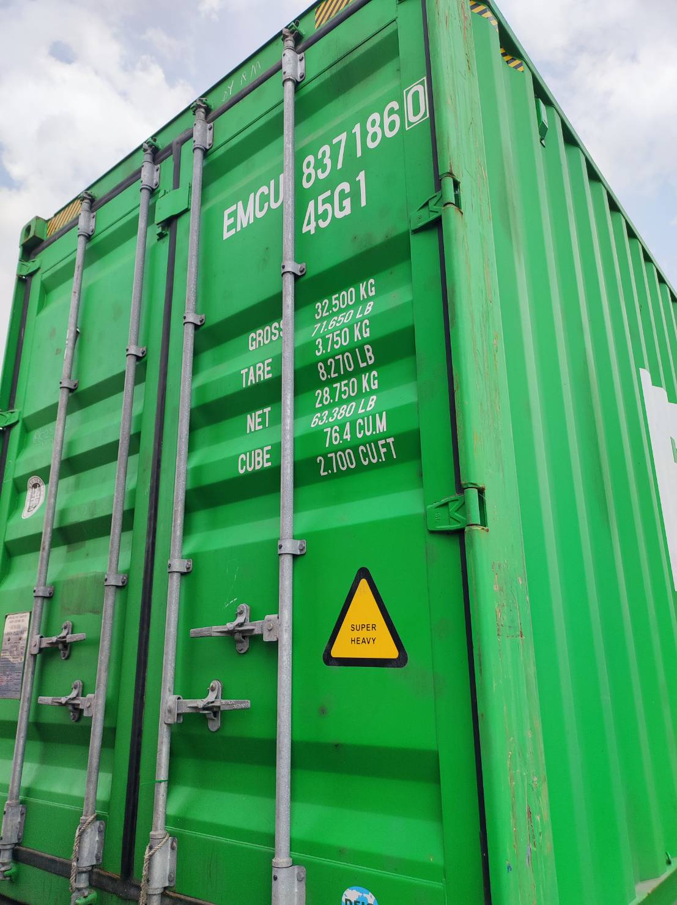
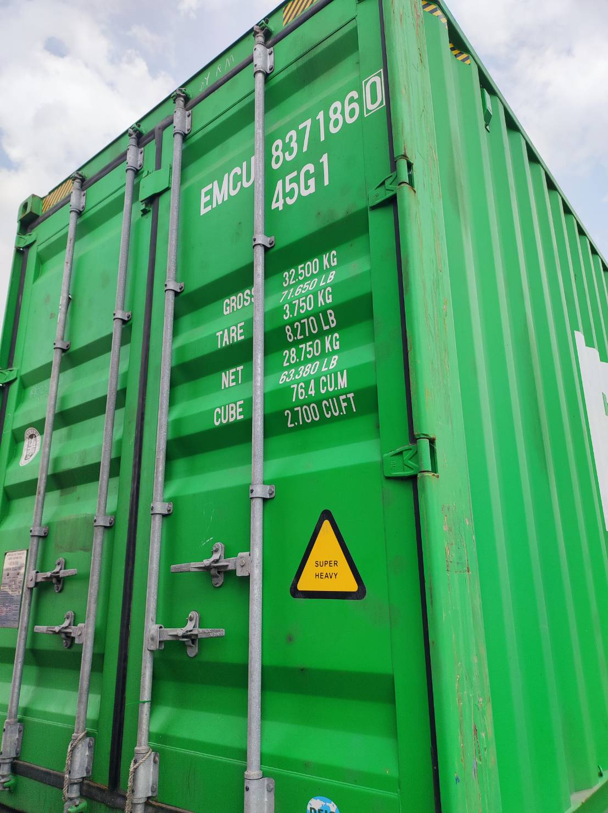

งานวิจัย
บริษัท ที่ปรึกษาอุตสาหกรรก้าวหน้า จำกัดได้ทำวิจัยเพื่อเพิ่มประสิทธิภาพในการพัฒนาโครงการต่างๆ ของระบบขนส่ง โลจิสติกส์ ยานยนต์ไฟฟ้า การออกแบบและจัดทำข้อมูล เป็นต้น งานวิจัยที่ผ่านมา บริษัทฯ ได้ร่วมดำเนินการกับทีมนักวิชาการ และผู้เชี่ยวชาญจากมหาวิทยาลัยต่างๆ เพื่อศึกษาและ ทางบริษัทฯ ได้ร่วมสนับสนุนทุนวิจัยในร่วมกับสถาบันการศึกษา และหน่วยงานให้ทุนของประเทศ ในการศึกษาและพัฒนาระบบการตรวจจับและอ่านหมายเลขแคร่รถไฟ (บทต.) ที่ใช้สำหรับการขนส่งสินค้าทางราง
Timeline
-
2557- นักวิจัย การศึกษาและจัดทำดัชนีความเหมาะสมในการเดินเท้ารอบสถานีรถไฟฟ้า ของมหาวิทยาลัยเทคโนโลยีพระจอมเกล้าพระนครเหนือ
- โครงการศึกษาวิจัยความเหมาะสมและออกแบบรายละเอียดระบบขนส่งมวลชนเชียงใหม่ ลำพูน และลำปาง บริษัท ขอนแก่น ช. ทวี (1993) จำกัด (พ.ศ. 2557-2558) -
2558- Thailand Maritime Industry Survey:The Institute for Economic and Social Research, Faculty of Economics, University of Indonesia(LPEM FEB Ul), Economic Research Institute for ASEAN and East Asia (ERIA). Indonesia
- ASEAN Maritime Connectivities:Thailand Report Economic Research Institute for ASEAN and East Asia (ERIA), Economic Research Institute for ASEAN and East Asia (ERIA). Indonesia -
2563- ระบบติดตาม วิเคราะห์ และรายงานข้อมูลการใช้งานรถโบกี้บรรทุกตู้สินค้า ร่วมโครงการกับคณะวิศวกรรมศาสตร์ จุฬาลงกรณ์มหาวิทยาลัย ของสำนักงานพัฒนาวิทยาศาสตร์และเทคโนโลยีแห่งชาติ (สวทช.)
-
2564- โครงการศึกษาและจัดทำระบบประเมินประสิทธิภาพการดำเนินงานการขนส่งทางรางในแต่ละสายทางของประเทศ กรมการขนส่งทางราง
- ผู้เชี่ยวชาญระบบขนส่งทางราง ระบบติดตาม วิเคราะห์ และรายงานข้อมูลการใช้งานรถโบกี้บรรทุกตู้สินค้า ระยะที่ 2 ร่วมโครงการกับคณะวิศวกรรมศาสตร์ จุฬาลงกรณ์มหาวิทยาลัย ของหน่วยบริหารและจัดการทุนด้านการเพิ่มความสามารถในการแข่งขันของประเทศ (บพข.) ของสำนักงานสภานโยบายการอุดมศึกษาวิทยาศาสตร์ วิจัยและนวัตกรรมแห่งชาติ (สอวช.) -
2565- โครงการออกแบบและติดตั้งสถานีเติมประจุรถจักรยานยนต์ไฟฟ้าแบบสลับ ร่วมกับ บ. เอเอ็มอาร์ จก. (มหาชน)
-
2567- ผู้เชี่ยวชาญระบบขนส่งทางราง ระบบติดตาม วิเคราะห์ และรายงานข้อมูลการใช้งานรถโบกี้บรรทุกตู้สินค้า ระยะที่ 2 (ปีที่ 2) ร่วมโครงการกับคณะวิศวกรรมศาสตร์ จุฬาลงกรณ์ มหาวิทยาลัย ของหน่วยบริหารและจัดการทุนด้านการเพิ่ม ความสามารถในการแข่งขันของประเทศ (บพข.) ของ สำนักงานสภานโยบายการอุดมศึกษาวิทยาศาสตร์ วิจัยและ นวัตกรรมแห่งชาติ (สอวช.)
- พัฒนาและออกแบบระบบการแจ้งเตือนผู้โดยสาร ที่สถานี และบนขบวนรถ